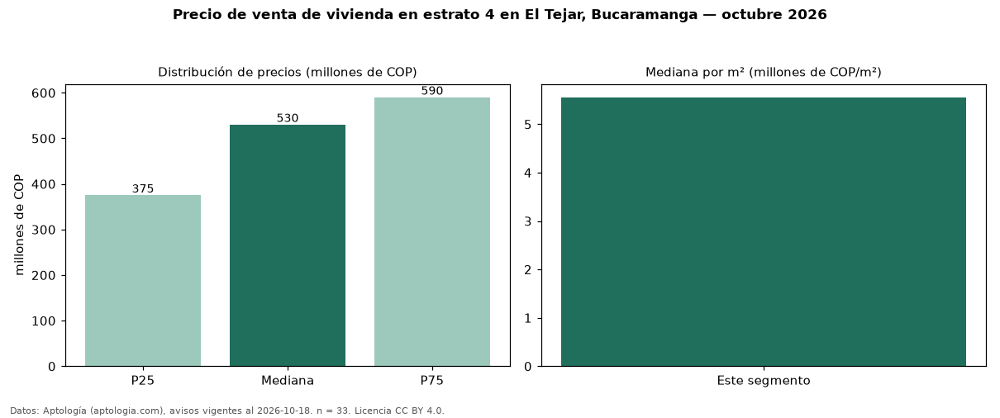

Precio de venta de vivienda en estrato 4 en El Tejar, Bucaramanga — octubre 2026
Con 33 avisos vigentes, el precio mediano de vivienda en estrato 4 en venta en El Tejar, Bucaramanga es COP 530 millones. Por metro cuadrado, la mediana es COP 5,56 millones/m² (n = 33 avisos con área). Incluye todos los tipos de vivienda de estrato 4 del barrio; la mediana de apartamentos del barrio, sin filtrar por estrato, es COP 650 millones. El área mediana anunciada es 94 m². El segmento con más oferta es el de 3 o más habitaciones (29 avisos, mediana COP 535 millones). La administración mediana declarada es COP 360.000 al mes (n = 32). La mitad central de los avisos va de COP 375 millones a COP 590 millones (razón 1,6), una dispersión moderada. Datos: Aptología (aptologia.com), CC BY 4.0 — https://www.aptologia.com/venta/bucaramanga/el-tejar. Archivos: PDF, CSV con las cifras y gráfica PNG.

| Avisos únicos | 33 |
|---|---|
| Percentil 25 | COP 375.000.000 |
| Mediana | COP 530.000.000 |
| Percentil 75 | COP 590.000.000 |
| Mediana por m² | COP 5.555.555 |
Fuente: avisos vigentes de portales inmobiliarios recopilados por Aptología, deduplicados (mínimo 30 avisos únicos por celda). Precios pedidos, no cerrados. Fecha: 2026-10-18.